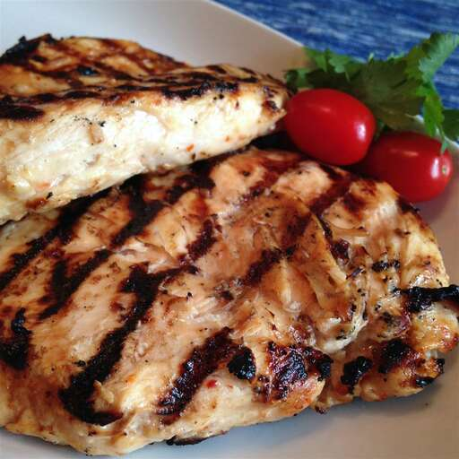

Italian Chicken Marinade

This Italian dressing chicken marinade is a super simple but delicious way to add flavor before grilling.
A good marinade is the key to juicy, tender, and absolutely delicious chicken that'll impress everyone at your table. These Italian chicken marinades are full of flavor and are easy to whip up, even on the busiest weeknights. Whether you're looking for something for the grill, oven, or the stove, you're going to want to bookmark this collection of our very best Italian chicken marinade recipes.
Ingredients
- 1 (16 ounce) bottle Italian-style salad dressing
- 1 teaspoon garlic powder
- 1 teaspoon salt
- 4 skinless, boneless chicken breast halves
Steps
step 1
- Whisk salad dressing, garlic powder, and salt together in a shallow baking dish; add chicken breasts and turn to coat. Cover the dish with plastic wrap and marinate in the refrigerator, 4 hours to overnight.
step 2
- Preheat an outdoor grill for high heat and lightly oil the grate.
step 3
- Remove chicken from marinade and shake off excess; discard remaining marinade.
step 4
- Cook chicken on the preheated grill until no longer pink in the center and the juices run clear, about 7 to 8 minutes on each side. An instant-read thermometer inserted into the center should read at least 165 degrees F (74 degrees C).